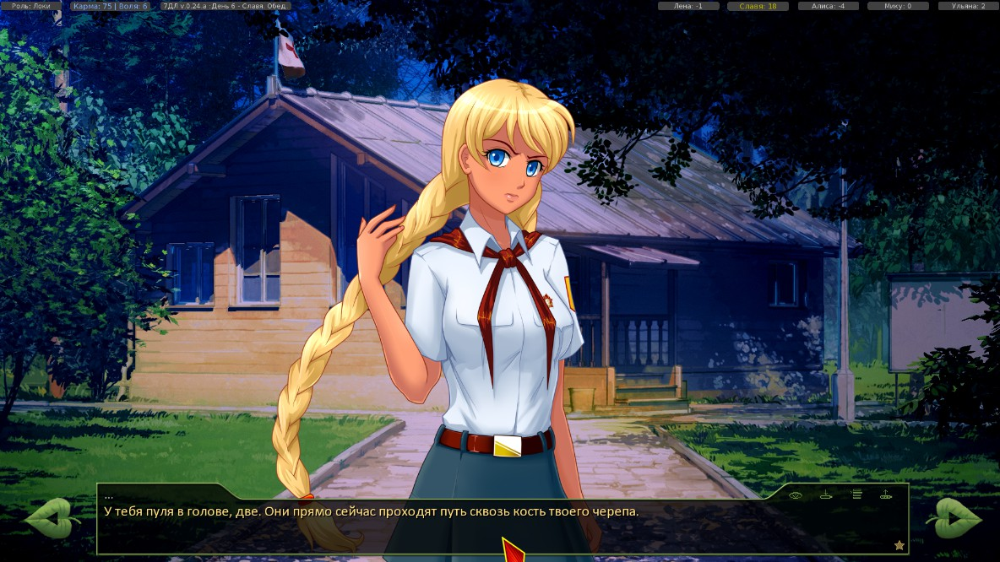
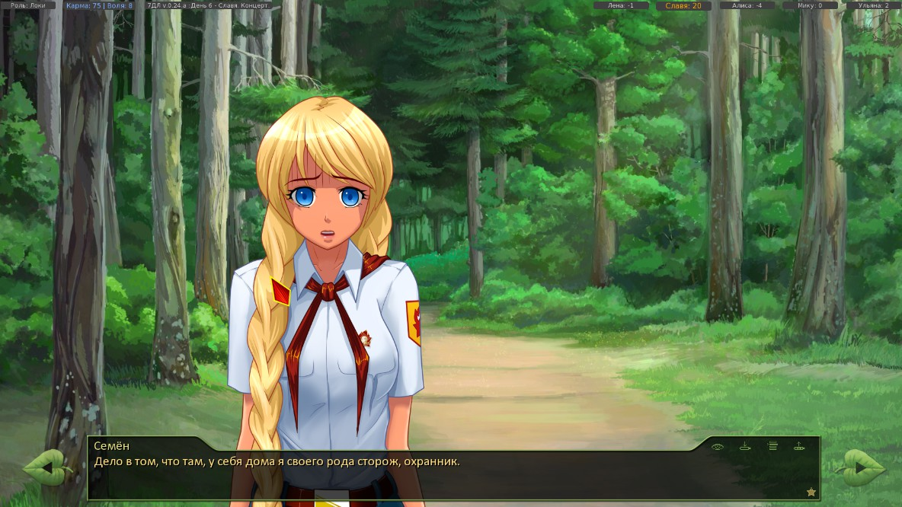
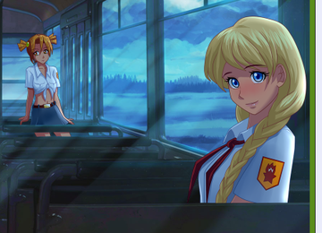

Пишите сюда, если вдруг обнаружили недочёты в сюжете - попробуем исправить!
Нестыковки
Сообщений 1 страница 30 из 472
Поделиться12015-10-21 01:33:22
- Вахаха!~

- Откуда: Санкт-Петербург
- Зарегистрирован: 2015-10-21
- Сообщений: 344
- Пол: Мужской
- Последний визит:
Сегодня 16:44:15
Поделиться22015-10-25 06:50:13
Второй день. После карточного турнира идем на остановку, следим за Славей, она нас замечает, возвращаемся в лагерь.
Третий день, после похода со Славей на пляж. ВНЕЗАПНО! разговор заходит про вчерашнее купание на озере, которого впринципе не было
"Мне почему-то вспомнилось вчерашнее озеро - но оно же было в другую сторону!"
Отредактировано Артем Карпухин (2015-10-25 06:58:10)
Поделиться32015-10-25 08:23:52
4й день, идем искать Шурика в одного (Культурно сказали в столовой что Лена не нужна, Славя сказала что идут без Семена ну итд)
Спускаемся в шахту, предлагается выбор автопилот/самостоятельно. Выбираем самостоятельно, первая же фраза
Славя
"Дабл-ю. ай. пи. Семен что это означает".
Мы идем одни, напоминаю
Поделиться42015-10-25 12:49:06
- Ньюфаг

- Зарегистрирован: 2015-10-24
- Сообщений: 2
- Последний визит:
2016-06-23 06:13:42
В реджекте Слави в диалоге с Шизой когда Семён вспоминает что на том свете откинулся разговор об обстоятельствах Герка (Локи,Стим).
Поделиться52015-10-25 13:11:39
- Вахаха!~
- Откуда: Санкт-Петербург
- Зарегистрирован: 2015-10-21
- Сообщений: 344
- Пол: Мужской
- Последний визит:
Сегодня 16:44:15
Не верю (с)Кончаловский
Свернутый текст
if herc:
dreamgirl "У тебя пуля в голове, две. Они прямо сейчас проходят путь сквозь кость твоего черепа."
elif loki:
dreamgirl "Вернее, сказать, умираешь прямо сейчас от многочисленных повреждений внутренних органов, кровопотери и переохлаждения."
else:
dreamgirl "Наглотавшись ледяной воды, сложив лапки, идёшь ко дну вместе с рейсом 410."
Поделиться62015-10-25 14:17:00
- Ньюфаг
- Зарегистрирован: 2015-10-24
- Сообщений: 2
- Последний визит:
2016-06-23 06:13:42
7dl-kun написал(а):
Не верю (с)Кончаловский
Натариально завереный №1

Натариально завереный №2

Хотя возможно стоит обратиться к Элдху.
Поделиться72015-10-25 14:20:29
- Ньюфаг

- Откуда: Россiйская Iмперия,Губкин
- Зарегистрирован: 2015-10-22
- Сообщений: 38
- Пол: Мужской
- Последний визит:
2016-12-02 17:36:27

Косяк со спинкой сидения и со Слявей. Вы сломали логику
Поделиться82015-10-25 19:12:01
- Вахаха!~
- Откуда: Санкт-Петербург
- Зарегистрирован: 2015-10-21
- Сообщений: 344
- Пол: Мужской
- Последний визит:
Сегодня 16:44:15
Стимопроблемы приехали...
Поделиться92015-10-26 17:17:06
- Ньюфаг

- Откуда: Москва
- Зарегистрирован: 2015-10-26
- Сообщений: 29
- Пол: Мужской
- Возраст: 24 [1993-08-16]
- Последний визит:
Сегодня 13:55:28
День 5, утро в домике Слави. Пошел искать Шурика вместе с Леной и Славей (выбрал вариант "Пускай идет с нами). На утро Семен почему то говорит "Фига ли она улыбалась, понятно не было - вспомнить хотя бы то, что они вдвоём без меня ушли на поиски". Версия 1.1
Поделиться102015-10-27 10:05:03
- Хикикомори

- Зарегистрирован: 2015-10-21
- Сообщений: 142
- Пол: Мужской
- Последний визит:
2018-04-15 22:31:52
7dl-kun написал(а):
Не верю (с)Кончаловский
Я тоже не верю. Не может этого быть. Или виджет глючит. У меня в коде всё то же самое, в этом каждый может удостовериться.
Поделиться112015-11-10 12:40:33
Первопост, не пинайте ногами.
В код пока не умею, поэтому словами опишу.
При прохождении за Локи начала первого дня, когда Славя отводит Сэма к вожатой, читаем следующее: "В отличие от "бочек", этот домик был треугольным, словно..."
А ведь бочек мне не показывали. В 0.24b - да, было, сцена со "штрафной" как раз на их фоне, но в "ревампе" штрафная оказалась пропущенной. А бочки остались.
UPD. Вспомнил про наушники, вывалившиеся у ГГ из ушей, когда он пытался сунуть их в уши, очнувшись в автобусе. Учитывая, что он очнулся сильно помолодевшим, может, было бы логичнее, если бы они просто не влезли в уши?
UPD2. Нестыковкой не является, чисто чтобы не плодить сообщения, впишу сюда. Второй день, Семён просыпается и изучает взглядом "огромный, большой, прекрасный и крайне объёмистый предмет женского белья". ИМХО, предложение получается перенасыщенным однотипными определениями.
Отредактировано BlakeThorne (2015-11-10 23:29:44)
Поделиться122015-11-21 22:52:01
Несостыковка
По концовке Алисы "Я отвезу тебя домой" выходит, что Алиса оставалась в мире Совёнка до встречи с Семёном в Питере, то есть она в параллельные вселенные не перемещалась. Но вот через 26 лет она встречает Семёна в нашем мире. Вопрос - какого фига она тут делает? Она должна быть в мире Совёнка. И не получится сказать, что мол мир то один и тот же, просто время отмотано назад. Нет, между 2 мирами есть явные различия. Самые очевидные - это генсек Генда, деньги с его портретом. От этого не отмахнешься.
Нельзя сесть на 2 стула одновременно. Не могут 2 человека пересечься, если они тупо находятся в 2 непохожих мирах. Не может быть мира, в котором одновременно есть и Генда, и Горбачёв, и оба были генсеками в одно и то же время.
Нет, это конечно можно допустить, но выходит просто смешно. После приезда Алисы из лагеря она внезапно обнаруживает, что имя Генды внезапно стерли из всех учебников, его запрещено упомянать под страхом расстрела. Во все дома стучатся важные дяди, отбирают местные гендорубли и втюхивают вместо них нормальные советские купюры. В общем, подгоняют мир под наш. Подгоняли-подгоняли его 26 лет, а тут появился Семён и не заметил разницы. Отличная работа!
Поделиться132015-11-21 23:31:48
- Мизантроп

- Откуда: Москва / Ташкент
- Зарегистрирован: 2015-10-21
- Сообщений: 890
- Последний визит:
Сегодня 18:28:46
По концовке Алисы "Я отвезу тебя домой" et cetera
Вы послесловия после РФ-гудов читали? Думаю, найдёте там разгадку на всё понятие "РФ-концовка".
Поделиться142015-11-28 18:11:17
Когда на 3-й день Семён судит матч по волейболу, и после первой игры один из мелких пинком отправляет мяч в кусты, Семён лезет за ним сам (и становится свидетелем разговора Слави с Леной).
Так вот, по логике он должен был бы припахать этого "футболиста" лезть за мячом лично. Воспитательный момент, все дела. Судья всё-таки.
Возможный фикс - оценив масштаб трагедии, Семён решает отправить искомого пионера искать мяч, но обернувшись, обнаруживает, что тот благополучно свинтил, ибо лезть в кусты неохота. И Семёну приходится искать его самому.
Возможно, оно так и подразумевалось, но в тексте это не отражено.
Поделиться152015-11-29 15:45:27
- Ньюфаг

- Зарегистрирован: 2015-10-23
- Сообщений: 38
- Последний визит:
2017-05-01 18:58:39
Эти дни перепроходил Мику-DJ, за Дрища.
Есть некоторые неувязки, которые вполне возможно разрешить. А именно:
if alt_day3_technoquest_st1 or alt_day3_technoquest_st2:
Под этими флагами у нас посещение клубов в 3-м дне - подготовка места под радиовещание - и события, которые с ним в дальнейшем связаны. Неувязки в том, что оные спрятаны под него не все. Есть места, которые логично бы в alt_route_mi_dj.rpy под него спрятать.
Итак:Код:2610 if alt_day3_technoquest_st3 != 1 or alt_day3_technoquest_st3 != 2: "Мику задумалась ещё раз. Вообще, после её этой мигрени она как-то изменилась - не тараторила, не бегала и не мельтешила перед глазами." me "Скажи… А у тебя голова не болит?"Не совсем понятно, почему здесь употребляется знак != (не-равно). Если бы мы освободили помещение в 3-м дне, то Мику действительно словила бы приступ мигрени в 4-м дне. А так мы разбирали завалы в 4-м дне вместе и ничего такого не было. Представляется, что более логичной будет выглядеть следующая конструкция:
Код:2610 if alt_day3_technoquest_st3 = 1 or alt_day3_technoquest_st3 = 2: "Мику задумалась ещё раз. Вообще, после её этой мигрени она как-то изменилась - не тараторила, не бегала и не мельтешила перед глазами." me "Скажи… А у тебя голова не болит?" "Будто вспомнив о своём реноме, японка заметалась по помещению." mi "Пожалуй, работающую аппаратуру не оставлю…" if alt_day3_technoquest_st3 = 1 or alt_day3_technoquest_st3 = 2: extend "Что? Голова?" "Вопрос излишний, согласен." "Для человека, который весь день находится в музыкальном клубе, в любой момент может взять в руки инструмент и что-нибудь сыграть, наверное, сегодняшнее перемещение достаточно неприятно." mi "Всё!" if alt_day3_technoquest_st3 = 1 or alt_day3_technoquest_st3 = 2: "И последующие её слова полностью подтвердили мои мысли." show mi smile pioneer with dspr mi "Знаешь, Сенечка, я сегодня за весь день ни одной песни не спела, и так себя чувствую нехорошо!" me "Ломка?" mi "Что?" me "Не-не, ничего. Ты попеть хочешь?" mi "Да!"Дальше, в том же файле:
строки 4127-4133"Она не договорила - охнула, схватившись за виски."
me "Мику!"
mi "Опять… Это…"
"Только сейчас я обратил внимание на знакомый уже гул, доносящийся, казалось, со всех сторон."
me "Так, давай на улицу, и… Не знаю."
"Оставлять её там стоять было как-то не очень красиво."
me "Найди мне Электроника, пожалуйста, кажется, здесь фон от какой-то техники, надо будет поискать."Если Сеня и Мику не попадали под гуделку в 4-м дне, то гул знакомым быть не может. Впрочем, в Славя-классике в нескольких строчках рассказывалось, откуда Сене известно про инфразвуковую завесу:
alt_route_sl_cl.rpy513 th "Намекаешь на инфразвуковую завесу?"
514 "Я вспомнил, как мне однажды довелось попасть под одну такую.{w} Впечатления… {w}Закачаешься."Думается, здесь не будет лишним повторить эти строчки. Будет примерно такая конструкция:
Код:4127 "Она не договорила - охнула, схватившись за виски." me "Мику!" if alt_day3_technoquest_st3 = 1 or alt_day3_technoquest_st3 = 2: mi "Опять… Это…" "Только сейчас я обратил внимание на знакомый уже гул, доносящийся, казалось, со всех сторон." if alt_day3_technoquest_st3 != 1 or alt_day3_technoquest_st3 != 2: "Гул, слишком похожий на инфразвуковую завесу." "Я вспомнил, как мне однажды довелось попасть под одну такую.{w} Впечатления… {w}Закачаешься." me "Так, давай на улицу, и… Не знаю." "Оставлять её там стоять было как-то не очень красиво." me "Найди мне Электроника, пожалуйста, кажется, здесь фон от какой-то техники, надо будет поискать."
И ещё:
строки 11985-11998
window show
"А я разбегаюсь, подбадриваемый серебряным колокольчиком голоса, призывающего победить чудище во славу своей царевны, и, сделав несколько шагов, прыгаю!"
"Зависаю в воздухе согласно своей несбыточной мечте о полётах наяву, лечу - и белый хлопок рубашки становится темницей страшному чудовищу, фыркающему и громко-громко топающему."
$ meet('mi','Мику')
mi "Какой симпатичный!"
"Умиляется моё солнце, неосторожно протягивая пальчик навстречу хищной заострённой мордочке."
"И если бы не моя реакция - то вцепился бы! Повис на челюстях с угловым давлением большим, чем у бультерьера."
me "Мику, аккуратнее!"
"Одёргиваю я."
me "Ежи очень больно кусаются."
"Чудовище повержено, отважный рыцарь вытирает верный клинок о траву и небрежно бросает сталь в ножны. Теперь можно идти и за заслуженной наградой!"
"А как же! Несмотря на то, что я до сих пор втихаря лелею желание отрезать себе локон волос - браслетка из каких-то шелковых ленточек уже нашла своё место на моём запястье."
"Вплетён туда и цвет дамы моего сердца. Мику вознаградила меня за помощь в беде."
window hide
логичнее смотрелись бы под флагом if alt_day4_mi_dj_hedg
Отредактировано openplace (2015-11-29 15:50:02)
Поделиться162015-11-29 16:29:27
- Вахаха!~
- Откуда: Санкт-Петербург
- Зарегистрирован: 2015-10-21
- Сообщений: 344
- Пол: Мужской
- Последний визит:
Сегодня 16:44:15
За флаги с гуделкой - спасибо, буду думать как там что поправить. С ежом всё не так однозначно. Сейчас могу лишь сказать, что это сделано нарочно (=
Поделиться172015-12-03 13:41:01
- Хикикомори
- Зарегистрирован: 2015-10-21
- Сообщений: 142
- Пол: Мужской
- Последний визит:
2018-04-15 22:31:52
Вопрос про "антигаремник-кастратор". Зачем резать карму с девочками в минус бесконечность? Почему, если герой гуляет с одной, то все остальные должны его ненавидеть? Я считаю, что стоит ограничиться верхним порогом - +5, или +3, скажем, и снижать до него.
И рядом ещё замечание по lp. Если в первый день вечером выбрать "отдам ключи завтра Славе", lp с ней тут же повышается. Нелогично ни разу. Во-первых, она понятия не имеет, что ей собираются отдавать ключи. Во-вторых, они могут и не быть отданы.
Поделиться182015-12-03 21:02:16
Элдхэнн написал(а):
Почему, если герой гуляет с одной, то все остальные должны его ненавидеть?
Мне почему-то казалось, что ЛП отражают не только отношение девушки к герою, но и отношение героя к девушке (аналогично, кстати, со сном с Мику, например, или с непинанием мячом в Ульяну), так что где-то здесь он, если садится за стол с девушкой, как бы начинает активно сомневаться в своих чувствах к другим.
С кастратором есть ещё две проблемы. Во-первых, он режет очки всем, кроме Ульяны, и зачастую в минус, и в итоге получается, что в соответствующей Славя-концовке как-то непропорционально вероятно начать встречаться с Ульяной. Во-вторых, имеются же проверки ЛП Лены и Слави в Алисаруте, и после введения кастратора они практически потеряли свой смысл. Если кастратор - это техническая штука для упрощения разруливания рутов, то, возможно, имело бы смысл в начале третьего дня куда-то сохранять все ЛП а после выхода на рут возвращать их на место?
Поделиться192015-12-03 21:45:04
Какая-то непонятка в обеде третьего дня.
18840 - 18945
Единственная возможность сесть с Алисой висит под
Код:if alt_day3_duty: <...> if alt_day2_date == 3 and alt_day3_dv_event: "Как и на завтраке, Двачевская подхватила меня под локоток и утащила к себе за стол питаться, иначе я бы так и сидел в каком-то непонятном опустошении на лавочке, забыв о том, что я вообще здесь забыл."Во-первых, на завтраке Алиса Семёна под локоток не подхватывала, он сам проявил активность
Код:else: "Немного подумав, я выбрал место рядом с Алисой." "Тремя минутами позже за столиком она наклонилась ко мне поближе и прошептала:"Во-вторых, там есть вот такой кусок
Код:me "Брось бяку!" "Мне пришлось рявкать на Ульянку, чтобы остановить." "На одной из тарелок была такая же конструкция, как и то, что я соорудил вчера — похоже, слухом земля полнится." th "Дети катастрофически быстро усваивают информацию о разных пакостях." me "Вот сейчас бы подняла, и…" "Я как мог аккуратно отнёс тарелку к окошку посудомойки и поставил туда — в компанию ещё нескольких таких «коктейлей»." us "Класс! А ты мне так и не показал вчера!"Вот этот фокус мы Ульянке могли и не проделывать, если получили дежурство не за побег, а за историю с ключами (она не мешает потом получить оба свидания с Алисой), то есть где-то там ещё, видимо, нужно проверять alt_day2_us_escape.
Отредактировано stetzen (2015-12-03 21:46:35)
Поделиться202015-12-04 11:24:50
- Хикикомори
- Зарегистрирован: 2015-10-21
- Сообщений: 142
- Пол: Мужской
- Последний визит:
2018-04-15 22:31:52
> если садится за стол с девушкой, как бы начинает активно сомневаться в своих чувствах к другим
Сомневаться настолько сильно, что начинает испытывать такую личную неприязнь, что даже кушать не может.
Поделиться212015-12-09 03:24:23
Элдхэнн написал(а):
> если садится за стол с девушкой, как бы начинает активно сомневаться в своих чувствах к другим
Сомневаться настолько сильно, что начинает испытывать такую личную неприязнь, что даже кушать не может.
Так нет же вроде нигде проверки ЛП на возможность сесть за столом. А после кастратора единственное место, где такая возможность отсутствует - это возможная невозможность сесть за обедом с Алисой, которая от лп не зависит, а зависит только и исключительно от побега. А если серьёзно, то я бы такую невозможность вследствие кастратора вполне понял - Семён общался-общался с девушкой, на свидание во втором дне может даже сходил, ну и убедился, что не его. Лично я бы её общества тоже избегал, чтобы откосить от возможных тяжелых объяснений и вообще от неудобного молчания.
Поделиться222015-12-11 04:24:37
я заметил проблему1
если играешь в славя-рут и выходишь на гуд за все роли одна концовка физрука приэтом перед этим все говорят что поступили в музыкальный или еще куда
может вместо физрука тогда добавить кпримеру учителя музыкм?
Поделиться232016-01-06 19:33:39
-Автору - нижайший поклон!!! Год назад я восхищался БЛ, но это - выше всяких похвал.
Теперь можно ложку дегтя?
Не знаю, насколько это важно (насколько мир 7ДЛ точно должен копировать наш), но Славя не могла поступить в Академию госбезопасности, ибо на тот момент это была Высшая школа КГБ, затем - Академия МБ. И до конца 90-х девочек туда не брали. Да и парней сразу после школы не брали.
Далее, у автобуса при прощании (рут Слави) Лена говорит Семе, что ей светит "бюджетное место в Политехе". Простите, но какие еще места могли быть в 1989-1991 годах?
Поделиться242016-01-07 00:00:54
- Хикикомори
- Зарегистрирован: 2015-10-21
- Сообщений: 142
- Пол: Мужской
- Последний визит:
2018-04-15 22:31:52
> насколько мир 7ДЛ точно должен копировать наш
Наличие Генды вам ни о чём не говорит?
Поделиться252016-01-07 11:01:40
как генсека? говорит!  оттого и вопрос, насколько это уточнение нужно. автору решать, а по мне, так все здорово.
оттого и вопрос, насколько это уточнение нужно. автору решать, а по мне, так все здорово.
О, да! ранее не пройденные концовки Славя-рута расставляют по местам не точки, а бомбовые воронки. Это не БЛ, где все зыбко-неясно. Другой мир. Все, вопрос снят.
Отредактировано AndrejPendragon (2016-01-07 22:27:08)
Поделиться262016-01-09 13:35:22
- Хикикомори
- Зарегистрирован: 2015-10-21
- Сообщений: 142
- Пол: Мужской
- Последний визит:
2018-04-15 22:31:52
Титры. "Всем, кто помогаЛ и поддерживаЛ". Может, переделать на настоящее время? Как-то, особенно после получения фейловой концовки, грустно это читается.
Поделиться272016-01-10 03:44:38
- Одиночка

- Зарегистрирован: 2015-10-24
- Сообщений: 75
- Пол: Мужской
- Последний визит:
2018-03-28 20:32:30
AndrejPendragon написал(а):
как генсека? говорит! оттого и вопрос, насколько это уточнение нужно. автору решать, а по мне, так все здорово.
Данная тема здесь, на форуме уже обсуждалась.
Поделиться282016-01-10 03:58:59
- Одиночка
- Зарегистрирован: 2015-10-24
- Сообщений: 75
- Пол: Мужской
- Последний визит:
2018-03-28 20:32:30
Автор, некоторая не то чтобы не стыковка, а скорее неточность:
Свернутый текст
... и я забрался в просторное нутро "Ниссана", рядом с Леной...
У Лены Ниссан-хук, а это хоть и эрзацполнопривод, но все равно машинка по сути маленькая. В нем нутро совсем не просторное, тем более для высокого Семена. Предлагаю заменить слово "просторное" на "уютное"
Поделиться292016-01-17 19:53:18
- Ньюфаг

- Зарегистрирован: 2016-01-17
- Сообщений: 8
- Последний визит:
2017-03-21 20:36:51
В Лена-ФЗ руте при сопровождении Леной в катакомбы и убежавшем Шурике идёт упор на довести раненного в руку Семёна до медпункта, где этот момент уже никак не обыгрывается, идёт стандартное "выпей отраву, тварь", без упоминания разбитой руки.
Отредактировано Flayer66 (2016-01-17 19:54:24)
Поделиться302016-01-27 19:40:16
alt_route_common, строки 11522-11538
Тихий час второго дня. Герк, внезапно, завидует тому, что он не Герк:
Скрин